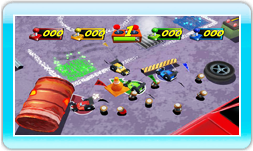

9 |
Super buggy |
 |
|

Batti gli avversari in questa gara tra buggy telecomandati! Raccogli le batterie e riportale nell'area del tuo colore. Le auto telecomandate possono contenere fino a cinque batterie, quindi dovrai tornare spesso nella tua area per depositarle prima di tornare a prenderne altre. Regole: tutte le auto possono trasportare fino a cinque batterie, che devono essere depositate nell'area del colore corrispondente per totalizzare punti. Più batterie depositi, più punti ottieni. Recupera più batterie che puoi! È una lotta senza esclusione di colpi! Usa il Control Stick sinistra e destra per sterzare, premi Quando usi il turbo, puoi tamponare le auto degli avversari e rubare le loro batterie, ma occhio a dove vai: se ti schianti contro un muro mentre stai usando il turbo, perderai le tue batterie! |
 per accelerare,
per accelerare,  per la retromarcia e
per la retromarcia e  per il turbo.
per il turbo.  |
 |
 |